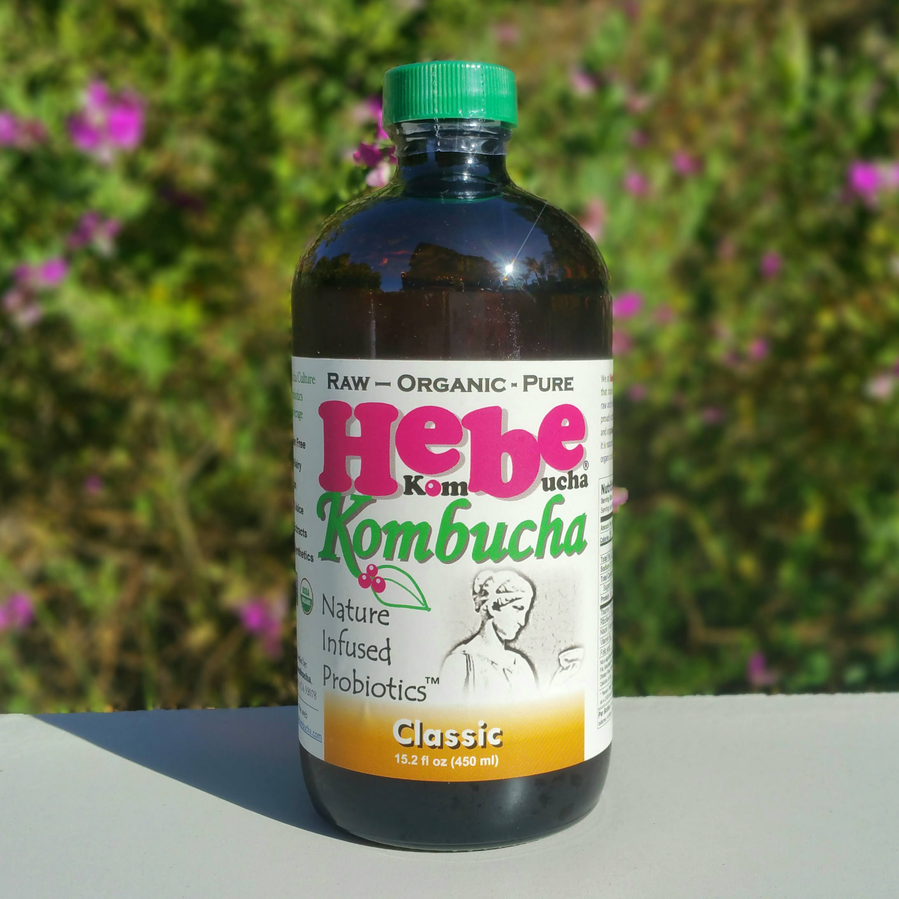
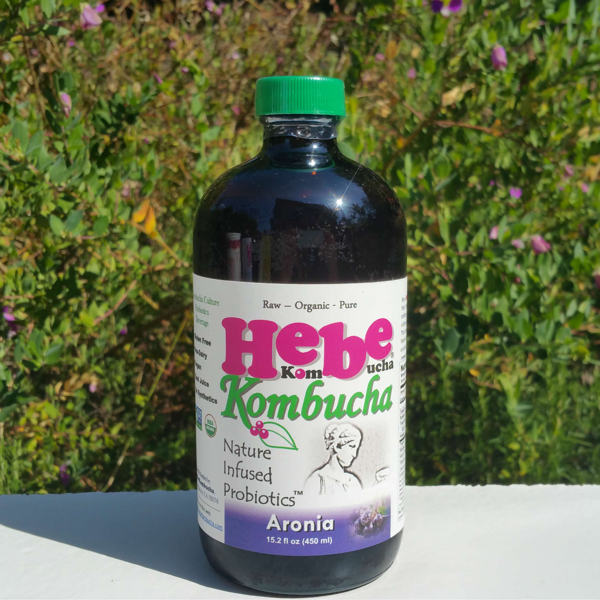
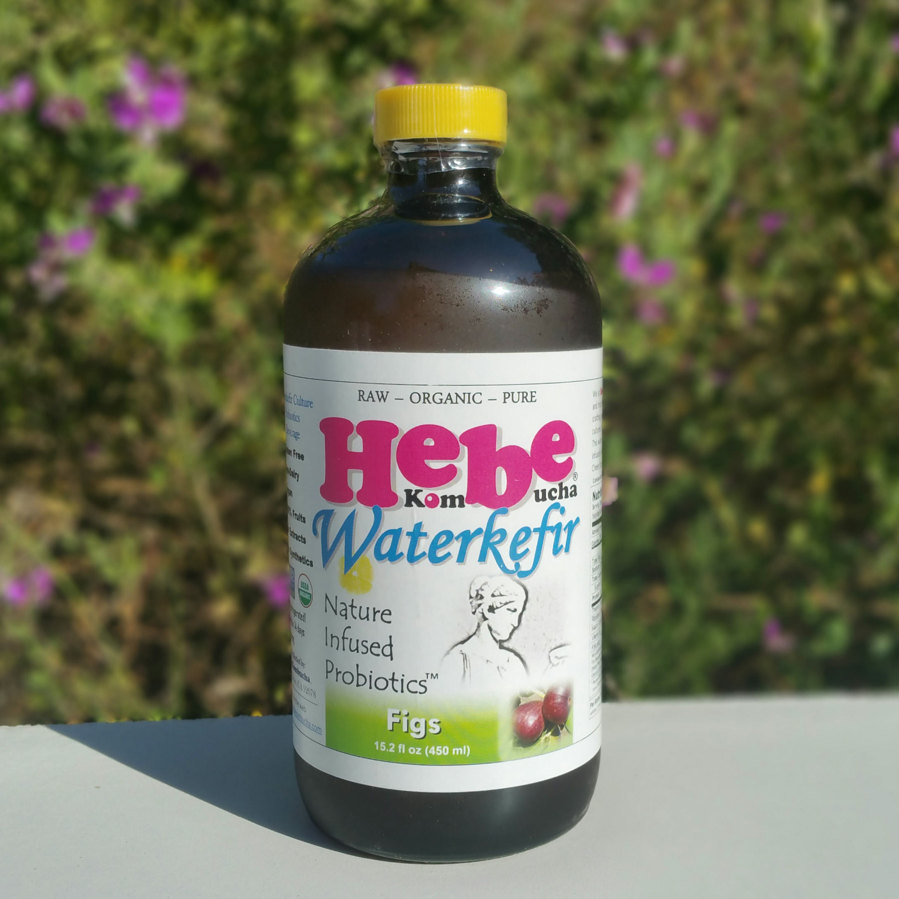
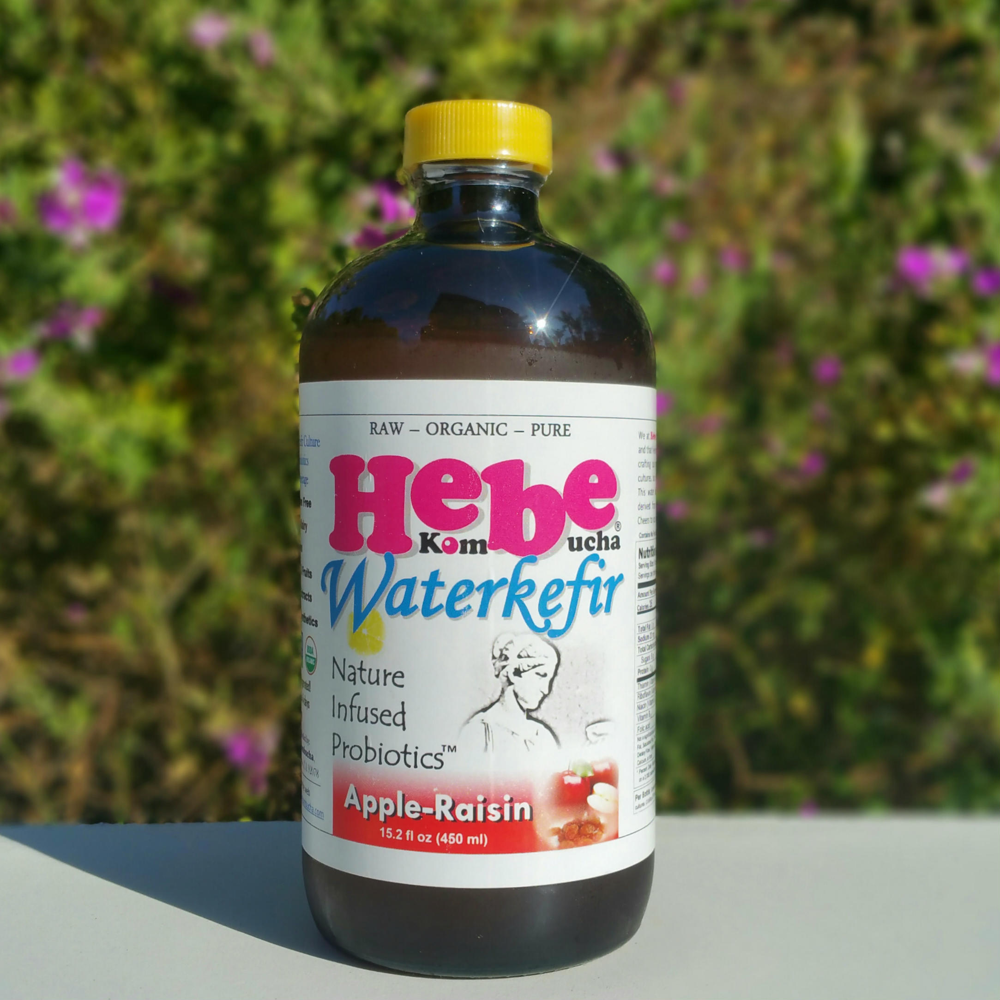

Our Products
Our kombucha and water kefir creations are not just another line of fizzy beverages, but rather health-boosting probiotics beverages that also happen to be delicious and refreshing. We started our enterprise with the clear vision that we won’t settle with mass-produced, long-distance-travelled, low nutritional value fruit extracts, purees or concentrates to make our products. Only regionally resourced, minimally processed and 100% pure fruits and fruit juices deserve to go into Hebe products. Our probiotics cultures are rigorously tested and quality controlled. We bring our ingredients together in our modern brewing facility using state-of-the-art brewing equipment and professional care to create our uniquely flavored “nature-infused probiotics” just for you.
We highly suggest that you read more about the incredible health benefits of probiotics, kombucha, and water kefir here:
We offer our kombucha and water kefir products in bottles (0.45L or 0.7L), 2 L SS growlers, or 5 gallon kegs.
Please select from the following taste spectrum of our Hebe Kombucha products. Cheers to your well-being! Enjoy!
We highly suggest that you read more about the incredible health benefits of probiotics, kombucha, and water kefir here:
We offer our kombucha and water kefir products in bottles (0.45L or 0.7L), 2 L SS growlers, or 5 gallon kegs.
Please select from the following taste spectrum of our Hebe Kombucha products. Cheers to your well-being! Enjoy!
KOMBUCHA
Classic
Made for the pure flavor lovers among our kombucha customers, this kombucha is raw and tangy, free of added artificial carbonation and free of any additional natural flavors. It is pure kombucha made from 100% organic black or green tea leaves imported from China and made of the highest quality, organic Florida sugar cane. Nothing is added, and nothing taken away from this kombucha as it leaves our tea fermentation vessels.

Aronia
Our signature flavor, this kombucha product is infused with just the right amount of delicious, certified organic Aronia berries, also known as black chokeberries. According to the latest science, the Aronia berry has the highest antioxidant potential of any known fruit, even higher than Açai. Our Aronia-infused kombucha surprises with a slightly sweet aroma layered on top of an invigoratingly tart, acidic foundation.
For those who have never heard about Aronia, click the following link to learn more about this truly remarkable little “superfruit."
For those who have never heard about Aronia, click the following link to learn more about this truly remarkable little “superfruit."

WATER KEFIR

Black Mission Fig
This is our signature water kefir product we brew here at Hebe Kombucha. It is water kefir made using pure water, the highest quality, raw, organic Florida cane sugar, and locally grown organic California lemons. We infuse our water kefir with just the right amount of California-grown organic black mission figs, a fruit which has been an essential component in the health-promoting Mediterranean diet for millennia. We do this not only to create our unique “figgy” flavor, but more importantly to add the great nutritional benefits of figs, a true California “superstar” fruit, to our water kefir.

Apple-Raisin
We have been crafting this great kombucha version for the longest time. This kombucha is not only packed with the goodness of 100% organic, locally grown apples, but also with the antioxidant power and rich flavor of California grown raisins. In order to offer the highest levels of health-supporting antioxidants, we only use the freshest, most seasonal apples available and (since most antioxidants reside in the apple peel), we only use unpeeled apples to prepare the fruit extracts for our kombucha. We all know the old Welsh proverb “an apple a day keeps the doctor away." To balance the acidity and slight tartness of the apples we use to make our kombucha, we infuse our kombucha with organic, California-made raisins.